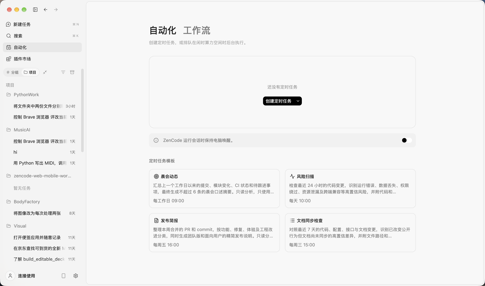

IDE 与任务引导
更新 IDE 主题和全屏布局，并改进任务创建与多 Agent 引导。
DESKTOP · 3.14.35
受够了单一厂商的封号、封闭和不可控，干脆自己做：客户端和调度握在自己手里，模型可以随时换，工作流不用换。
从微信继续桌面上的同一任务；由独立调度模型为新任务选择执行模型。代码、创作与可选的电脑操作，都在 ZenCode 工作区里完成。
★ 主推平台 macOS (Apple Silicon)：原生 Computer Use 桌面控制、微信远程续接与创作工作区支持最完整（已通过 Apple 公证）。

这是代码制作的功能示意，不是实时录屏。画面上的字只来自已写明的产品行为：从微信继续桌面上的同一任务，并在同一任务和会话里查看进度、续接工作并收取文件。这段片子不演示原生 Computer Use，也不演示模型调度。
近期更新
2026-10-23 同版本更新：同步工具输出、视频生成和桌面控制改进，并重新构建各平台安装包。
更新 IDE 主题和全屏布局，并改进任务创建与多 Agent 引导。
为 macOS、Windows 和 Linux 提供可选的原生桌面控制，并由用户手动启用、按系统权限运行。
视频目录保留 20 个本轮订阅实测通过的模型，并提供各自的时长选项；同步工具输出压缩、提示词复制和桌面控制观察校验。Mac 已公证装订，Windows/Linux 通过安装验收。模型可用性仍受套餐和上游服务影响。
产品能力
ZenCode 展示当前版本已提供的能力。具体操作会根据平台、权限和工作区类型显示。
IDE 内含文件浏览、编辑、搜索、Git、终端和扩展入口。选中文本或拖入文件引用即可把工作区上下文带进对话。IDE 用于本机工作区。
在任务区组织并跟进多个 Agent 工作。可配置独立调度模型，为新任务选择执行模型；续接任务沿用当前模型。调度器不会自动把一个任务拆成多个子 Agent。
模型切换使用同一会话已提交的对话历史，未发送草稿不会被带入。发送时可附上当前文件、可见 Diff、终端、预览和 Git 摘要；复制提示词只保留气泡可见正文，不夹带内部环境尾注。
复杂任务可以报告阶段进度，并先列出候选文件供用户勾选。确认后，无法验证写入范围的工具调用会被拒绝，既有权限检查继续生效。
桌面控制默认关闭，可手动启用。macOS、Windows 和 Linux 使用各自原生执行器；Windows/Linux 操作前校验当前观察，坐标操作需要截图。可用操作仍取决于系统权限、图形会话和桌面环境。
通过现有微信配对入口连接桌面 Host，在同一任务和会话中查看进度、续接工作并收取文件。账号与工作区权限由运行时校验。
讨论并生成图像、视频和幻灯片，按模型选择视频比例与时长。媒体提示词默认用英文生成，也可指定其他语言，画面文字保留用户原文。幻灯片可导出可编辑 PPT、保真 PPT 或 A4 PDF，结果可预览并保存到本地。
通过插件市场安装和管理技能、命令、子智能体及 MCP 服务。IDE 扩展从 Open VSX 或本地 VSIX 安装。
桌面端可连接 SSH 与 WSL 工作区。远程文件操作仍路由到对应工作区，不会因本机没有文件通道而回退到本地执行。
使用桌面应用、浏览器工作区或命令行 TUI、Web、Agent 入口。会话上下文和可用工具受当前连接方式与权限约束。
通过 ZenMux 调用模型。API Key 加密保存在本机；模型用量和费用以 ZenMux 账户为准。
重复日志和冗长搜索结果可精简为模型预览，保留诊断信息和可读取的完整原文。不承诺固定 Token 或费用降幅，也不保证跨供应商缓存复用。
界面一览
以下为 ZenCode 产品界面截图，展示自动化工作流、全局操作搜索，以及 IDE 中的 AI 面板。
创作实录
这段真实录屏展示了如何调用华数艺术动效，生成并预览一段梵高风格的猫咪动画。
微信实操
这段实录展示了在微信里发送图片生成请求，并在同一聊天中收到生成结果。
工作流对照
这里对比的是工作方式，不是对所有同类产品的性能排名。
| 工作流 | ZenCode | 分散工具流程 |
|---|---|---|
| 手机续接 | 微信配对桌面 Host，消息进入同一任务和会话。 | 若聊天、远程桌面和创作工具彼此独立，用户需要在应用间切换并自行衔接任务上下文。 |
| 模型选择 | 独立调度模型可为新任务选择执行模型；续接沿用当前模型。 | 在不同工具或任务间手动选择模型。 |
| 代码与创作 | 同一产品提供源码 IDE、创作工作区和幻灯片导出。 | 代码助手与创作软件分别管理。 |
| 桌面操作 | 原生 Computer Use 可选启用，并受平台与系统权限限制。 | 按所用产品单独安装和授权桌面控制工具。 |
| 定时与后台自动化 | 桌面应用内置本地调度器；任务到点时需要应用运行、电脑唤醒。 | 分散工具可能需要各自运行的调度器或常驻主机。 |
定时任务由桌面应用本机调度，需保持 ZenCode 运行且电脑唤醒。开启“保持电脑运行”可防止闲置休眠，但不能阻止合盖或手动睡眠；错过计划时间超过 5 分钟的任务可能跳过。
下载
所有安装包与更新清单均来自 ZenCode 的 GitHub 正式发行版： ZenCode 3.14.35 Release。
2026-10-23 已重新发布 3.14.35。已安装 3.14.35 的用户，请下载对应平台的新安装包并重新安装，以获得本次更新。
Windows 和 Linux 原生 Computer Use 的可用性取决于图形会话与系统权限。
常见问题
ZenCode 连接 ZenMux。你需要自己的 API Key，可使用订阅或按量付费 Key；模型覆盖、配额与费用以 ZenMux 账户和套餐规则为准。通过本页邀请链接注册 ZenMux，作者可能获得推广奖励或额度；价格、奖励资格及结算以 ZenMux 现行规则为准。
文件保留在对应工作区，API Key 加密保存在本机。模型请求会发送到 ZenMux。
不会。调度模型为新任务选择执行模型；子 Agent 的创建由当前任务和用户控制。
不能保证固定节省。工具输出精简会保留可找回的原文，会话也可共享已提交历史；实际 Token、费用与缓存效果仍取决于内容及模型供应商。
macOS Apple Silicon、Windows x64/ARM64、Linux x64/ARM64；Linux 提供 DEB 和 RPM。
ZenCode 产品源码。产品基于开源 ZCode 开发；Landing Page 源码在 ZenMuxDev。
目前没有 Intel Mac 安装包；macOS 正式下载仅支持 Apple Silicon。
来源
ZenCode 基于智谱开源的 ZCode 。ZenCode 的新增重点是微信续接桌面任务、独立模型调度与共享上下文、创作工作区和可选原生 Computer Use；模型通过 ZenMux 连接。